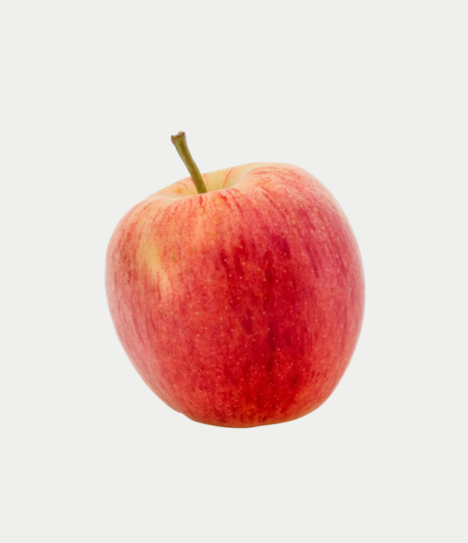

Gala
A two tone treasure.

Gala apples are prized for their sweet, crisp texture and delightfully mild flavor. The fine texture and aromatic nature of Gala apples make them a perfect for eating out of hand or as a topping for fresh salads.
- Availale August through June.
- Sweet to Tart Scale: 4/10.
- Gala apples are a native of New Zealand.